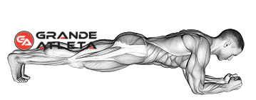

Abdômen
12 Séries
ABDOMINAL EM V NA MAQUINA

3 séries (20 a 30 rept)
O abdominal em V na máquina é um exercício para quem deseja usar cargas mais altas para definir o abdômen.
Além de exigir mais esforço do abdômen por conta da carga, o uso da máquina diminui a tensão nas costas e no pescoço, que é um problema comum em vários exercícios abdominais.
O principal músculo trabalhado é o reto abdominal, que é o responsável pelo “six pack” ou gominhos no abdômen. Outros músculos envolvidos incluem os abdominais oblíquos (ou laterais) e os inferiores.
Expire ao inclinar o tronco e ao subir as pernas. Faça uma breve pausa e, em seguida, retorne à posição inicial enquanto inspira.
ABDOMINAL OBLIQUO NO BANCO ROMANO
3 séries (20 a 30 rept)
A função dos abdominais oblíquos é garantir a capacidade do tronco de se mover lateralmente e, de forma indireta, estes grupos musculares também são responsáveis pela flexão e rotação da coluna, tão importantes nos movimentos básicos do cotidiano.
PRANCHA PONTE
3 séries (60~90 segundos)
A prancha é um excelente exercício para fortalecer o chamado grupamento do core, e auxilia principalmente na postura e no desempenho esportivo. Esse exercício atua em mais de 28 pares de músculos, que envolvem abdômen e quadris. A prancha ainda é ótima para o equilíbrio
ABDOMINAL NO BANCO DECLINADO

3 séries (12 a 20 rept)
Ele proporciona um bom resultado no enrijecimento do abdômen, deixando seus músculos fortalecidos e modelados
ANTE BRAÇO
12 séries
O antebraço é composto por dois grupos musculares menores, um responsável pela flexão do punho e outro pela extensão.
Existem outras funções, mas é isto que nos importa quando o assunto é hipertrofia, e que ambos os grupos precisam receber a mesma atenção para não gerar desproporção.
Outro detalhe importante é que os músculos dos antebraços são majoritariamente compostos por fibras do tipo 1.
Este tipo de fibra possui grande resistência a fadiga e pode (os estudos são divergentes) responder melhor a treinos com mais repetições.
ROSCA PUNHO

3 séries (15 rept)
Rosca punho é um exercício para antebraço clássico, e por um motivo: funciona muito bem.
Principalmente porque que vai exigir bastante dos músculos flexores.
Para executar o exercício basta sentar em um banco e apoiar os antebraços nas pernas enquanto segura uma barra com as palmas para cima. Usando apenas as mãos e punhos, faça uma rosca com a barra movendo-a o mais alto possível em direção ao teto.
Dica: na descida, deixe que a barra role até a ponta dos dedos, então suba e repita.
CAMINHADA DO FAZENDEIRO

2 séries (ida - volta)
Caminhada do fazendeiro é um exercício típico de atletas de força.
Mas que pode gerar um aumento de força e tamanho absurdo nos antebraços (de quebra ainda melhorar o seu condicionamento físico).
Para executar a caminhada do fazendeiro, basta pegar um par de halteres que tenham uma carga, no mínimo, desafiadora e em seguida caminhar com eles.
Sim, é isso mesmo! O simples fato de você caminhar com halteres pesados nas mãos vai fazer com que seus antebraços (e vários outros grupos musculares) sejam altamente exigidos. Não há uma distância padrão para você fazer a caminhada. Apenas use o espaço que você tem disponível na academia e escolha uma carga que seja possível ir e voltar.
E acredite, caminhada do fazendeiro está entre os melhores exercícios para antebraço.
Não subestime-o.
SUSPENSÃO NA BARRA

3 séries (30~90 segundos)
Ficar suspenso em uma barra sustentando o próprio peso com as mãos é uma ótima maneira para trabalhar os antebraços de forma isométrica.
Tudo o que você precisa fazer aqui, como o nome do exercício sugere, é ficar suspenso na barra e se segurar por quanto tempo aguentar.
Você pode usar a pegada (pronada, supinada e neutra) que achar melhor e até variar a cada série para gerar estímulos diferentes.
Caso esteja fácil demais ficar suspenso na barra por mais de 90s, adicione carga.
ROSCA PUNHO INVERSA

3 séries (15 rept)
É praticamente o mesmo exercício que a rosca punho, porém, já que é executado de maneira inversa, serão os músculos extensores que moverão a carga. Sente no banco reto e encoste os antebraços nas pernas, assim como na rosca punho, com a diferença que as palmas das mãos estarão para baixo. Usando apenas as mãos e punhos, faça uma rosca inversa movendo a barra o mais alto possível e então para baixo.
Lembre-se que em ambos os exercícios para antebraço (rosca punho normal e inversa), somente as mãos e punhos se movem, os antebraços ficam imóveis nas pernas.
ROSCA INVERSA

3 séries (10 rept)
Rosca inversa é um exercício clássico para o antebraço onde você executa a rosca direta com as palmas das mãos para baixo, ou seja, de maneira inversa.
Esteja preparado para reduzir drasticamente as cargas neste exercício já que não será possível usar sequer metade da carga que você usa na rosca direta normal.